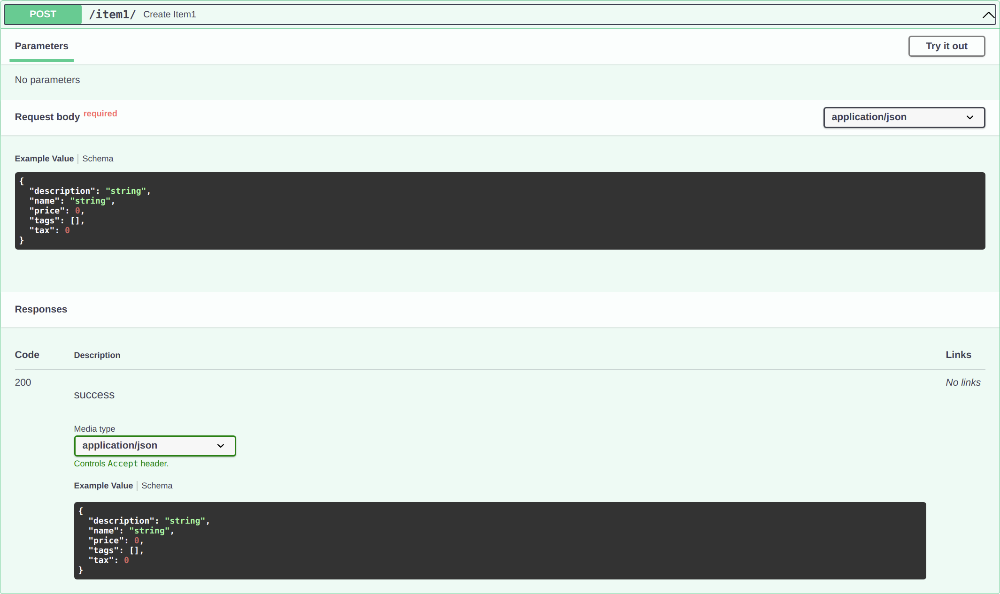

Response
You can declare the model used for the response with the parameter response_model in any of the path operations:
@app.get()@app.post()@app.put()@app.delete()
or declare the model/TypedDict in the return value typehint.
response_model in param
from typing import List, Optional
from flask_sugar import Sugar
from pydantic import BaseModel
app = Sugar(__name__)
class Item(BaseModel):
name: str
description: Optional[str] = None
price: float
tax: Optional[float] = None
tags: List[str] = []
@app.post("/item1/", response_model=Item)
def create_item1(item: Item):
return item
@app.post("/item2/", response_model=Item)
def create_item2(item: Item):
return item.dict()

Note
Notice that response_model is a parameter of the "decorator" method (get, post, etc). Not of your path operation function, like all the parameters and body.
The returned value can be a model or a dict.
It receives the same type you would declare for a Pydantic model attribute, so, it should be a Pydantic model.
Flask Sugar will use this response_model to:
- Convert the output data to its type declaration.
- Validate the data.
- Add a JSON Schema for the response, in the OpenAPI path operation.
- Will be used by the automatic documentation systems.
But most importantly:
- Will limit the output data to that of the model. We'll see how that's important below.
Technical Details
The response model is declared in this parameter instead of as a function return type annotation, because the path function may not actually return that response model but rather return a dict, database object or some other model, and then use the response_model to perform the field limiting and serialization.
Model in typehint
from typing import List, Optional
from flask_sugar import Sugar
from pydantic import BaseModel
app = Sugar(__name__)
class Item(BaseModel):
name: str
description: Optional[str] = None
price: float
tax: Optional[float] = None
tags: List[str] = []
@app.post("/items/")
def create_item(item: Item) -> Item:
return item
It works the same as model in param.
TypedDict in typehint
from typing import List
from typing_extensions import TypedDict
from flask_sugar import Sugar
app = Sugar(__name__)
class UserInfo(TypedDict):
name: str
age: int
tags: List[str]
@app.get("/")
def index() -> UserInfo:
return {"name": "rockman", "age": 25, "tags": ["a", "b"]}
Note
You can't use TypedDict in params of path operations or in decorator.
It only works in return value typehint.
It checks the return value of path operations both type check statically and at runtime
Response Model encoding parameters
Your response model could have default values, like:
from typing import List, Optional
from flask_sugar import Sugar
from pydantic import BaseModel
app = Sugar(__name__)
class Item(BaseModel):
name: str
description: Optional[str] = None
price: float
tax: float = 10.5
tags: List[str] = []
items = {
"foo": {"name": "Foo", "price": 50.2},
"bar": {"name": "Bar", "description": "The bartenders", "price": 62, "tax": 20.2},
"baz": {"name": "Baz", "description": None, "price": 50.2, "tax": 10.5, "tags": []},
}
@app.get("/items/<item_id>", response_model=Item, response_model_exclude_unset=True)
def read_item(item_id: str):
return items[item_id]
description: Optional[str] = Nonehas a default ofNone.tax: float = 10.5has a default of10.5.tags: List[str] = []as a default of an empty list:[].
but you might want to omit them from the result if they were not actually stored.
For example, if you have models with many optional attributes in a NoSQL database, but you don't want to send very long JSON responses full of default values.
Use the response_model_exclude_unset parameter
You can set the path operation decorator parameter response_model_exclude_unset=True:
from typing import List, Optional
from flask_sugar import Sugar
from pydantic import BaseModel
app = Sugar(__name__)
class Item(BaseModel):
name: str
description: Optional[str] = None
price: float
tax: float = 10.5
tags: List[str] = []
items = {
"foo": {"name": "Foo", "price": 50.2},
"bar": {"name": "Bar", "description": "The bartenders", "price": 62, "tax": 20.2},
"baz": {"name": "Baz", "description": None, "price": 50.2, "tax": 10.5, "tags": []},
}
@app.get("/items/<item_id>", response_model=Item, response_model_exclude_unset=True)
def read_item(item_id: str):
return items[item_id]
and those default values won't be included in the response, only the values actually set.
So, if you send a request to that path operation for the item with ID foo, the response (not including default values) will be:
{
"name": "Foo",
"price": 50.2
}
Info
Flask Sugar uses Pydantic model's .dict() with its exclude_unset parameter to achieve this.
Info
You can also use:
response_model_exclude_defaults=Trueresponse_model_exclude_none=True
as described in the Pydantic docs for exclude_defaults and exclude_none.
Data with values for fields with defaults
But if your data has values for the model's fields with default values, like the item with ID bar:
{
"name": "Bar",
"description": "The bartenders",
"price": 62,
"tax": 20.2
}
they will be included in the response.
Data with the same values as the defaults
If the data has the same values as the default ones, like the item with ID baz:
{
"name": "Baz",
"description": None,
"price": 50.2,
"tax": 10.5,
"tags": []
}
Flask Sugar is smart enough (actually, Pydantic is smart enough) to realize that, even though description, tax, and tags have the same values as the defaults, they were set explicitly (instead of taken from the defaults).
So, they will be included in the JSON response.
Tip
Notice that the default values can be anything, not only None.
They can be a list ([]), a float of 10.5, etc.
response_model_include and response_model_exclude
You can also use the path operation decorator parameters response_model_include and response_model_exclude.
They take a set of str with the name of the attributes to include (omitting the rest) or to exclude (including the rest).
This can be used as a quick shortcut if you have only one Pydantic model and want to remove some data from the output.
Tip
But it is still recommended to use the ideas above, using multiple classes, instead of these parameters.
This is because the JSON Schema generated in your app's OpenAPI (and the docs) will still be the one for the complete model, even if you use response_model_include or response_model_exclude to omit some attributes.
This also applies to response_model_by_alias that works similarly.
from typing import Optional
from flask_sugar import Sugar
from pydantic import BaseModel
app = Sugar(__name__)
class Item(BaseModel):
name: str
description: Optional[str] = None
price: float
tax: float = 10.5
items = {
"foo": {"name": "Foo", "price": 50.2},
"bar": {"name": "Bar", "description": "The Bar fighters", "price": 62, "tax": 20.2},
"baz": {
"name": "Baz",
"description": "There goes my baz",
"price": 50.2,
"tax": 10.5,
},
}
@app.get(
"/items/<item_id>/name",
response_model=Item,
response_model_include={"name", "description"},
)
def read_item_name(item_id: str):
return items[item_id]
@app.get("/items/<item_id>/public", response_model=Item, response_model_exclude={"tax"})
def read_item_public_data(item_id: str):
return items[item_id]
Tip
The syntax {"name", "description"} creates a set with those two values.
It is equivalent to set(["name", "description"]).
Recap
Use the path operation decorator's parameter response_model to define response models and especially to ensure private data is filtered out.
Use response_model_exclude_unset to return only the values explicitly set.